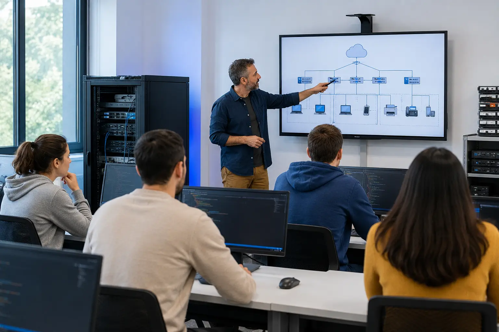

Ciclos oficiales
Formación completa en sistemas, redes y desarrollo con orientación profesional.
TecnoCampus Formación
Tecnología que se aprende haciendo
Formación informática práctica
Somos un centro especializado en ciclos de Formación Profesional, cursos técnicos y formación para empresas. Aprenderás con proyectos reales, laboratorios equipados y acompañamiento docente.

Formación completa en sistemas, redes y desarrollo con orientación profesional.
Programas breves para actualizar conocimientos en web, Linux, datos y ciberseguridad.
Planes adaptados a equipos que necesitan mejorar sus competencias digitales.
Revisión de currículum, preparación de entrevistas y bolsa de prácticas.